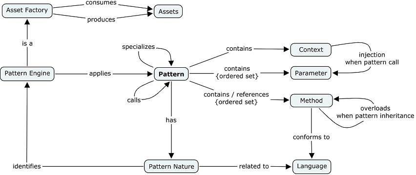
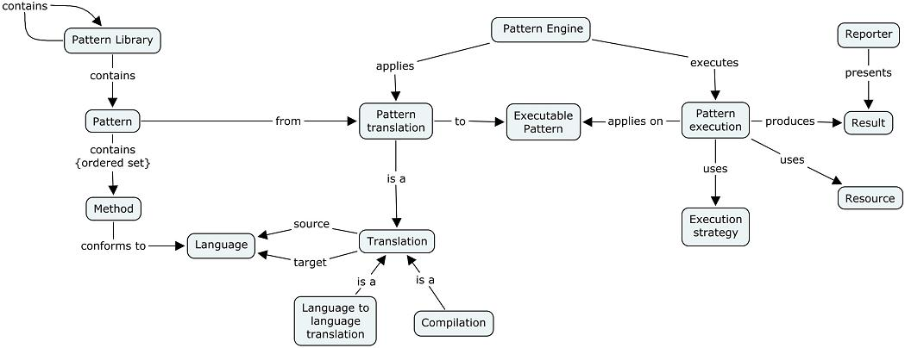

Pattern |
A pattern is a solution to a recurrent generation problem. The objective is 1) to produce assets in series (code, frameworks, tools, etc.), 2) to customize a generation in order to fit project needs.
The motivation is to produce assets with systematism and with the ability to tailor this generation. The pattern features are the following:

Figure 1. Generation Pattern GLobal View
Pattern library. Patterns are organized in pattern libraries. A pattern library allows both classifying and defining pattern execution blocks.
Pattern. A pattern contains an ordered set of parameters, an ordered set of methods, local variables. A pattern can inherit from another pattern (simple inheritance) and can call other patterns.
Pattern Parameter. A pattern contains a set of parameters. A parameter has a name and type. A parameter type is a model element from an ecore amodel or a Java type.
A pattern parameter is associated to a query applied on a input resource.
The set of pattern parameters and their queries define a Cartesian product [P1 x P2 x ... x Pn]. At execution time, pattern methods are applied on each tuple of the query results. A pattern without parameter calls the pattern methods just one time.
Variables. A pattern can work with local variables. The variable type is a model element or a Java type.
Method. A method contains a description that conforms to a language (e.g., Jet). The most popular type of description is textual but it could be action semantics or an activity graph. A method can overload a method of a super-pattern. A method orchestration defines the order to apply methods and pattern calls at execution.
Pattern Inheritance. Pattern inheritance serves to inherit of parameter definition and methods. For the Cartesian product, the super-patterns are considered first. A super-pattern can be defined in another a pattern library than the current pattern's library, or in a library from a different Factory Component.
Pattern Call. A pattern call serves to reuse patterns.
Patterns are edited first (creation, update, deletion), processed to be executed, and executed.
Translation.Translation transforms the pattern and its methods toward a target language (e.g., Jet form) understandable by an engine (e.g., the Jet engine). When needed, the translated code is compiled.
Execution. At this step, the executable result of the translation is executed by an engine (e.g., the Jet model-to-text engine) according an execution strategy (e.g., pattern-oriented, resource-oriented strategies). The result of this execution is transmitted to a reporter.

Figure 3. Translation and Execution of Pattern